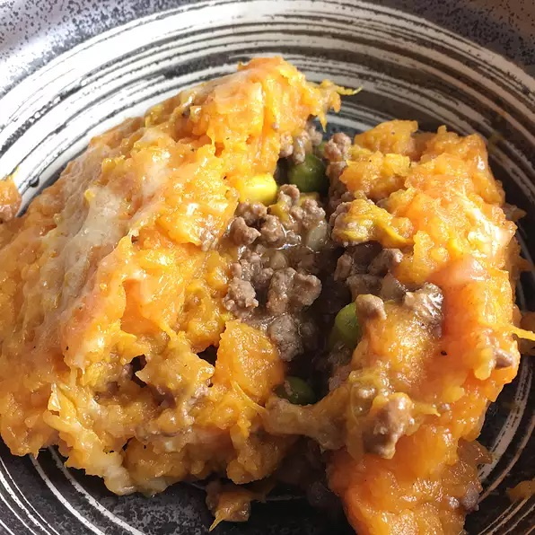

Sweet Potato-Cauliflower Shepherd's Pie

Description
A lighter version of traditional British shepherd's pie using sweet potatoes and cauliflower, the perfect blend of sweet and savory.
Ingredients:
- 1 pound sweet potatoes, peeled and chopped
- 1/2 pound cauliflower florets, chopped
- 1/4 cup chicken broth
- 3 tablespoons butter
- 1 teaspoon salt
- 1/2 teaspoon ground black pepper
Ground Beef Layer:
- 2 tablespoons light olive oil
- 2 carrots, diced
- 1/2 onion, diced
- 2 cloves garlic, minced
- 1 teaspoon salt
- 1/2 teaspoon ground black pepper
- 1 1/2 pounds ground beef
- 2 tablespoons tapioca starch
- 1 cup chicken broth
- 1/2 cup peas
- 1/2 cup corn
- 3 tablespoons tomato paste
Toppings:
- 1/2 cup freshly grated Parmesan cheese
Directions:
- Preheat the oven to 400 degrees F (200 degrees C).
- Place sweet potatoes in a pot and add water to cover. Bring to a boil and cook for 15 minutes. Add cauliflower and more water if needed; cook until all vegetables are tender, about 15 minutes more. Drain. Mash sweet potatoes and cauliflower with 1/4 cup broth, butter, 1 teaspoon salt, and 1/2 teaspoon black pepper.
- Heat olive oil in a large skillet over medium-high heat. Add carrots and onion; saute until softened, about 5 minutes. Add garlic, 1 teaspoon salt, and 1/2 teaspoon black pepper; cook 5 minutes more. Add beef; cook and stir until browned and crumbly, 5 to 10 minutes.
- Sprinkle tapioca starch over the beef mixture in the skillet. Add 1 cup broth, peas, corn, and tomato paste. Bring to a boil. Reduce heat and simmer for 10 to 15 minutes. Spread beef mixture evenly in a baking dish. Top with mashed sweet potato mixture. Sprinkle Parmesan cheese on top.
- Bake in the preheated oven until slightly browned on top, about 25 minutes. Let stand 15 minutes before serving.
Cook's Notes:
If you are not avoiding gluten, you can use flour in place of the tapioca starch.
You can use all mashed cauliflower or all sweet potatoes, if you prefer. You can also use all regular potatoes. Just be sure to use the same total amount of whichever vegetable you choose.
Nutrition Facts:
Per Serving: 366 calories; protein 19g; carbohydrates 21.9g; fat 22.7g; cholesterol 69mg; sodium 1046.8mg.
Disclaimer:
Recipe page constructed as final assignment to HTML-introductory coursework on The Odin Project.
All credits to this recipe belong to A Day In the Kitchen